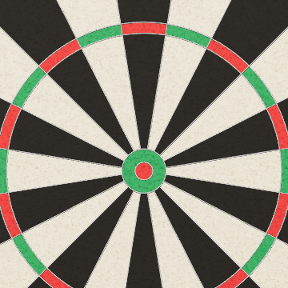
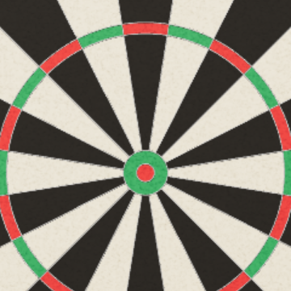

本番と同じダーツのプログラムを、そのまま2つ動かしています。的をタップすると投げます。比べるために、動くのはタップした方だけで、もう片方は止まります。
コマ数と「一番長いコマ」は、スマホで見ると差が分かりやすいです。PC は描く力に余裕があるので、どちらも速く出ることがあります。「この端末のまま」で端末が2倍以下の画面なら、変更前と変更後の解像度は同じになります（変わるのは3倍の画面だけです）。
ブルのまわりの細い金属のワイヤーで比べています。変更後は線の縁がわずかに柔らかくなります。

